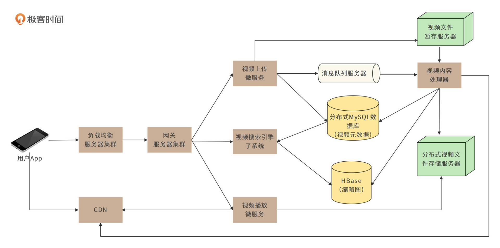
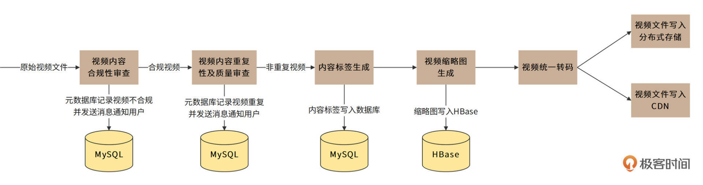
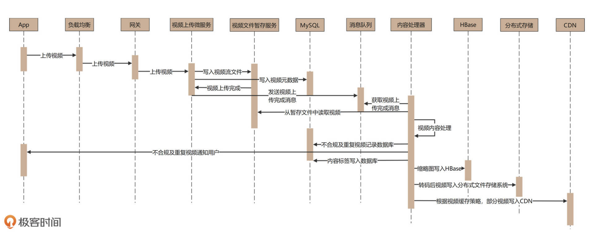
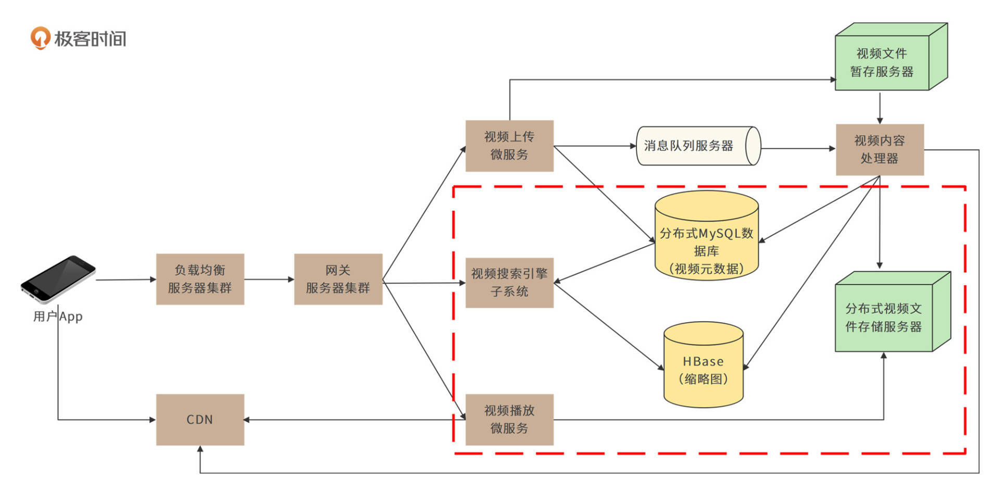
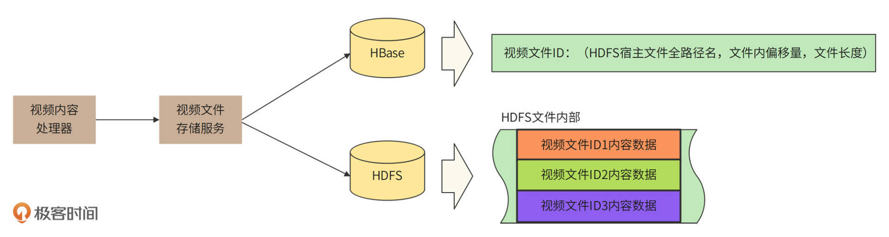
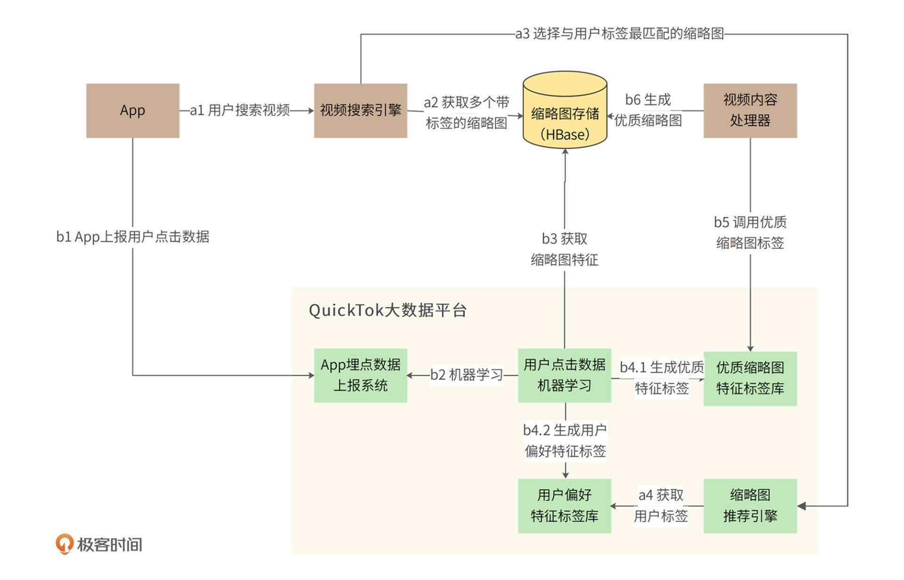

- 00 开篇词 “附身”大厂架构师，身临其境设计高并发系统.md.html
- 01 软件建模与文档：架构师怎样绘制系统架构蓝图？.md.html
- 02 高并发架构设计方法：面对高并发，怎么对症下药？.md.html
- 03 短 URL 生成器设计：百亿短 URL 怎样做到无冲突？.md.html
- 04 网页爬虫设计：如何下载千亿级网页？.md.html
- 05 网盘系统设计：万亿 GB 网盘如何实现秒传与限速？.md.html
- 06 短视频系统设计：如何支持三千万用户同时在线看视频？.md.html
- 07 海量数据处理技术回顾：为什么分布式会遇到 CAP 难题？.md.html
- 08 秒杀系统设计：你的系统可以应对万人抢购盛况吗？.md.html
- 09 交友系统设计：哪种地理空间邻近算法更快？.md.html
- 10 搜索引擎设计：信息搜索怎么避免大海捞针？.md.html
- 11 反应式编程框架设计：如何使方法调用无阻塞等待？.md.html
- 12 高性能架构的三板斧：分析系统性能问题从哪里入手？.md.html
- 13 微博系统设计：怎么应对热点事件的突发访问压力？.md.html
- 14 百科应用系统设计：机房被火烧了系统还能访问吗？.md.html
- 15 限流器设计：如何避免超预期的高并发压力压垮系统？.md.html
- 16 高可用架构的十种武器：怎么度量系统的可用性？.md.html
- 17 Web 应用防火墙：怎样拦截恶意用户的非法请求？.md.html
- 18 加解密服务平台：如何让敏感数据存储与传输更安全？.md.html
- 19 许可型区块链重构：无中心的区块链怎么做到可信任？.md.html
- 20 网约车系统设计：怎样设计一个日赚 5 亿的网约车系统？.md.html
- 21 网约车系统重构：如何用 DDD 重构网约车系统设计？.md.html
- 22 大数据平台设计：如何用数据为用户创造价值？.md.html
- 结束语 一个架构师的一天.md.html
- 捐赠
06 短视频系统设计：如何支持三千万用户同时在线看视频？
你好，我是李智慧。
短视频（short video）通常时长在15分钟以内，主要是在移动智能终端上进行拍摄、美化编辑或加特效，并可以在网络社交平台上进行实时分享的一种新型视频形式。短视频具有时间短、信息承载量高等特点，更符合当下网民手机使用行为习惯，短视频的用户流量创造了巨大的商机。
我们准备开发一个面向全球用户的短视频应用，用户总量预计20亿，应用名称：QuickTok。
视频文件和其他媒体文件相比，会更大一点，这就意味着存储短视频文件需要更大的存储空间，播放短视频也需要更多的网络带宽。因此，QuickTok的主要技术挑战是：如何应对高并发用户访问时的网络带宽压力，以及如何存储海量的短视频文件。接下来我们就来看看QuickTok的需求与技术架构。
需求分析
QuickTok的核心功能需求非常简单：用户上传视频、搜索视频、观看视频。我们将主要分析非功能需求。
QuickTok预计用户总量为20亿，日活用户约10亿，每个用户平均每天浏览10个短视频，由此可以预估，短视频日播放量为100亿：
\(\\small 10亿\\times10=100亿\)
平均播放QPS为11万/秒：
\(\\small 100亿\\div（24\\times60\\times60）\\approx11万/秒\)
每秒11万用户点击视频，假设用户平均观看5分钟，那么同时在观看的视频数就是：
\(\\small 11万/秒\\times5\\times60秒=3千万\)
假设每个短视频的平均播放次数200次，那么为了支撑这样体量的播放量，平均需要每秒上传视频数：
\(\\small 11万/秒\\div200=550/秒\)
每个短视频平均大小100MB，每秒上传至服务器的文件大小为：
\(\\small 100MB\\times550=55GB\)
（视频虽然不是一秒内上传至服务器的，但是这样计算依然没有问题。）
每年新增视频需要的存储空间：
\(\\small 55GB\\times60\\times60\\times24\\times365=1700PB\)
事实上，为了保证视频数据的高可用，不会因为硬盘损坏导致数据丢失，视频文件需要备份存储，QuickTok采用双副本的备份存储策略，也就是每个视频文件存储三份，需要的总存储空间：
\(\\small 1700PB\\times3=5200PB\)
而播放视频需要的总带宽：
\(\\small 11万\\times100MB\\times8bit=88Tb\)
因此，我们需要设计的短视频应用是一个每秒上传550个视频文件、11万次播放、新增165GB存储以及88Tb总带宽的高并发应用系统。这个系统呢需要是高性能的，能迅速响应用户的上传和播放操作，也需要是高可用的，能面向全球用户提供7 * 24小时稳定的服务。
概要设计
QuickTok的核心部署模型如下图。

用户上传视频时，上传请求会通过负载均衡服务器和网关服务器，到达视频上传微服务。视频上传微服务需要做两件事：一是把上传文件数据流写入视频文件暂存服务器；二是把用户名、上传时间、视频时长、视频标题等视频元数据写入分布式MySQL数据库。
视频文件上传完成后，视频上传微服务会生成一个视频上传完成消息，并将其写入到消息队列服务器。视频内容处理器将消费这个上传完成消息，并根据消息内容，从视频文件暂存服务器获取视频文件数据，进行处理。
视频内容处理器是一个由责任链模式构建起来的管道。在这个管道中，视频将会被顺序进行内容合规性审查、内容重复性及质量审查、内容标签生成、视频缩略图生成、统一视频转码处理等操作，如下图。

合规且非重复的视频会经过统一转码，最终被写入分布式文件存储和CDN。这样视频上传处理就完成了，具体时序图如下。

以上就是对视频上传环节的设计，接下来我们将讨论对视频搜索及播放部分的设计，即核心部署模型图中标红的部分，如下。

视频搜索引擎会根据用户提交的视频标题、上传用户等元数据，以及视频内容处理器生成的内容标签构建倒排索引。当用户搜索视频时，系统会根据倒排索引来检索符合条件的视频，并返回结果列表。结果列表在App端向用户呈现时，会将此前视频内容处理器生成的缩略图展现给用户，使用户对视频内容有个初步而直观的感受。
当用户点击缩略图时，App开始播放视频。App并不需要下载完整个视频文件才开始播放，而是以流的方式一边下载视频数据，一边播放，使用户尽量减少等待，获得良好的观看体验。QuickTok使用MPEG–DASH流媒体传输协议进行视频流传输，因为这个协议具有自适应能力，而且支持HTTP，可以应对QuickTok的视频播放需求。
详细设计
为解决QuickTok的两个重要问题：如何存储海量视频文件？如何解决高并发视频播放导致的带宽压力？详细设计将关注视频存储系统、性能优化与CDN。
此外，“如何生成更吸引用户的缩略图”是短视频应用用户体验的一个关键问题，详细设计也会关注缩略图生成与推荐的设计实现。
视频存储系统设计
由需求分析可知，QuickTok每年新增5200PB的存储。因此，“如何存储海量视频文件”就是QuickTok设计的重要挑战之一。对此，我们可以尝试与[网盘]相同的存储技术方案，将视频文件拆分成若干block，使用对象存储服务进行存储。
但QuickTok最终采用了另一种存储方案，即使用Hadoop分布式文件系统HDFS进行存储。HDFS适合大文件存储的一次写入多次读取的场景，满足视频一次上传多次播放的需求；同时，它还可以自动进行数据备份（缺省配置下，每个文件存储三份），也满足我们关于数据存储高可用的需求。
HDFS适合存储大文件，大文件减少磁盘碎片，更有利于存储空间的利用，同时HDFS NameNode的访问压力也更小，所以我们需要把若干个视频文件合并成一个HDFS文件进行存储，并将存储相关的细节记录到HBase中。

举个例子，当用户上传一个视频文件，系统会自动生成一个视频ID，这里假设这个ID是123。视频内容处理器先对视频进行一系列处理，再调用视频文件存储服务来进行存储。
存储服务首先通过HDFS创建一个文件，比如/data/videos/clust0/p0/000000001，然后将视频文件数据顺序写入到HDFS中。写完后，存储服务就可以得到这个HDFS文件的全路径名(/data/videos/clust0/p0/000000001)、视频文件在HDFS中的偏移量0、文件大小99,000,000B。
然后，视频文件存储服务再将这些信息记录到HBase中，主键就是视频ID<123>，value就是
假设另一个用户上传的视频ID为456，文件大小100,000,000B，紧随着上一个视频文件，也保存到同一个HDFS文件中。那么HBase中就可以记录主键<456>，value
当其他用户播放视频456时，播放微服务根据主键ID在HBase中查找value值，得到HDFS文件路径/data/videos/clust0/p0/000000001，从该文件99,000,000偏移位置开始读取100,000,000Byte数据，就是视频ID 456完整的文件数据了。
性能优化与CDN设计
我们前面分析过，QuickTok需要的总带宽是88Tb，这是一个非常巨大的数字。如果单纯靠QuickTok自己的数据中心来承担这个带宽压力，技术挑战和成本都非常巨大。只有通过CDN将用户的网络通信请求就近返回，才能缓解数据中心的带宽压力。
App请求获取视频数据流的时候，会优先检查离自己比较近的CDN中是否有视频数据。如果有，直接从CDN加载数据，如果没有，才会从QuickTok数据中心获取视频数据流。
如果用户的大部分请求都可以通过CDN返回，那么一方面可以极大加快用户请求的响应速度，另一方面又可以较大缓解数据中心的网络和硬盘负载压力，进一步提升应用整体的性能。
通常的CDN设计，是在CDN中没有用户请求的数据时，进行回源，即由CDN请求数据中心返回需要的数据，然后缓存在CDN本地。
但QuickTok考虑到了短视频的特点：大V、网红们发布的短视频会被更快速、更广泛地播放。因此针对粉丝量超过10万的用户，系统将采用主动推送CDN的方法，以提高CDN的命中率，优化用户体验，如图：

从图中可以看出，视频内容处理器进行完视频处理后，一方面会将视频存储到前面说过的视频存储系统中，另一方面又会调用CDN推送服务。然后，CDN推送服务将调用大数据平台，获取视频上传者的活跃粉丝数、粉丝分布区域等数据。如果是10万粉丝以上的用户发布了短视频，CDN推送服务会根据其粉丝活跃的区域，将视频推送到对应区域的CDN服务器上。
短视频的完播率通常不足30%，所以QuickTok也不需要将完整视频推送到CDN，只需要根据视频发布者的历史播放记录，计算其完播率和播放期望进度，然后将短视频切分成若干chunk，将部分chunk推送到CDN即可。
业界一般共识，视频应用CDN处理的带宽大约占总带宽的95%以上，也就是说，通过合理使用CDN，QuickTok数据中心需要处理的带宽压力不到4Tb。
缩略图生成与推荐设计
用户可以通过App主页、搜索结果页、视频推荐页等页面看到视频列表，其中每个视频都需要有个缩略图。用户点击缩略图，就开始播放视频。
缩略图通常是由视频的某一帧画面缩略而生成的。事实上，缩略图的选择会极大地影响用户点击、播放视频的意愿。一个10分钟的视频大约包含3万帧画面，选择哪一帧画面，才能使用户点击视频的可能性最大？以及，针对不同的用户分类，是否选择不同的缩略图会产生更高的点击率？
我们需要通过大数据平台的机器学习引擎来完成缩略图的生成和推荐，如下图。

缩略图的生成和推荐可以分为两个具体过程：
- 实时在线的缩略图推荐过程a；
- 利用离线机器学习生成优质缩略图的过程b。
a过程中，用户通过搜索引擎搜索视频，搜索引擎产生搜索结果视频列表后，根据视频ID从缩略图存储中获取对应的缩略图。
但是，一个视频可能对应很多个缩略图，如果想要显示最吸引当前用户的那个，搜索引擎就需要调用QuickTok大数据平台的缩略图推荐引擎进行推荐。
推荐引擎可以获取当前用户的偏好特征标签以及视频对应的多个缩略图特征，使用XGboost算法训练好的模型，将用户特征标签和缩略图特征进行匹配，然后返回最有可能被当前用户点击的缩略图ID。搜索引擎再按照ID，将对应的缩略图构建到搜索结果页面，返回给用户。
用户浏览搜索结果列表，点击某些缩略图进行播放。App应用会将用户的浏览与点击数据发送给QuickTok大数据平台，这样就进入了利用机器学习来生成优质缩略图的过程b。
机器学习系统获取到了海量用户的浏览和点击数据，同时获取每个缩略图的特征。一方面，机器可以学习到，哪些特征的缩略图更容易获得用户点击，从而生成优质缩略图特征标签库；另一方面，机器还可以学习到每个用户自身更偏好的图像特征标签，供前面提到的推荐引擎使用。
有了机器学习系统的加持，视频内容处理器就可以使用优质特征标签库来处理上传的视频内容，抽取符合优质特征的帧，进而生成缩略图。
以上的a、b两个过程不断循环迭代，系统就可以不断优化优质特征标签库，不断使缩略图更符合用户喜好。
那最开始没有特征库的时候怎么办呢？视频内容处理器可以使用随机的办法，抽取一些帧作为缩略图，进行冷启动。机器学习再从这些随机抽取的缩略图上开始学习，从而进入循环优化过程。
小结
我们在缩略图生成部分，使用了大数据和机器学习的一些技术，如果你不熟悉，可能会觉得有点困难。但是现在人工智能和机器学习几乎是稍具规模的互联网系统的标配，架构师作为整个系统的设计者、技术负责人，可能对算法的细节无法做出具体的优化，但是对于算法在整个架构中的作用、相关数据的处理和流转必须非常熟悉，才能设计出满足业务需要的架构方案。
所以，大数据和机器学习的原理和应用方法应该是架构师技能栈的一部分，能够和算法工程师顺畅讨论技术细节是架构师必备的能力。如果你对这部分知识掌握不完整，可以阅读专栏《从0开始学大数据》。
思考题
不止是缩略图的选择需要用到推荐算法，视频内容本身也需要推荐算法：当用户播放完一个视频，QuickTok需要给用户自动播放下一个视频，以此增强用户粘性。那么下一个视频应该播放什么？你是否可以参考文中的缩略图生成与推荐架构图，自己画一个视频推荐的架构图？如果能说说你的设计思路就更好了。
欢迎在评论区分享你的思考，或者提出对这个设计文档的评审意见，我们共同进步。
© 2019 - 2023 Liangliang Lee. Powered by gin and hexo-theme-book.